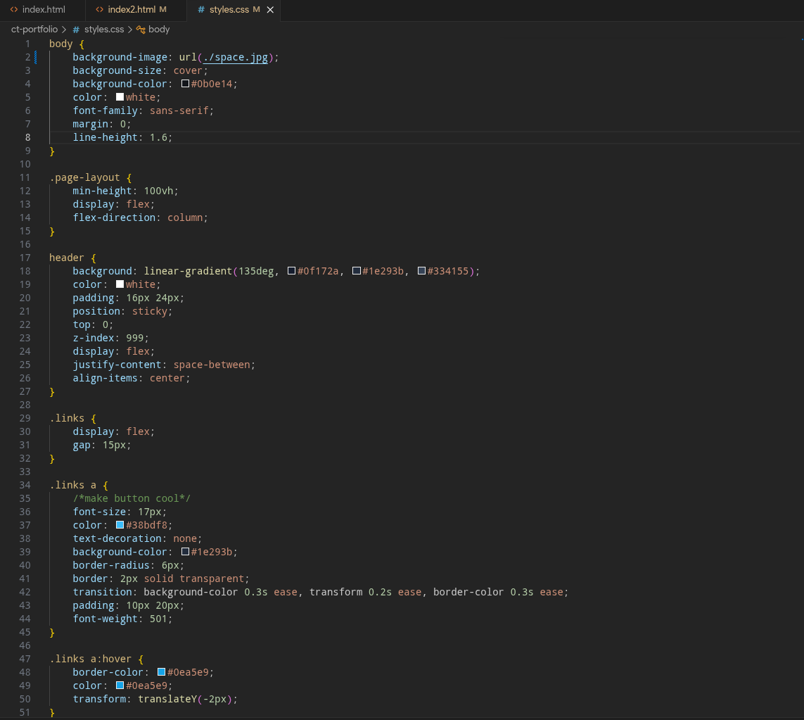
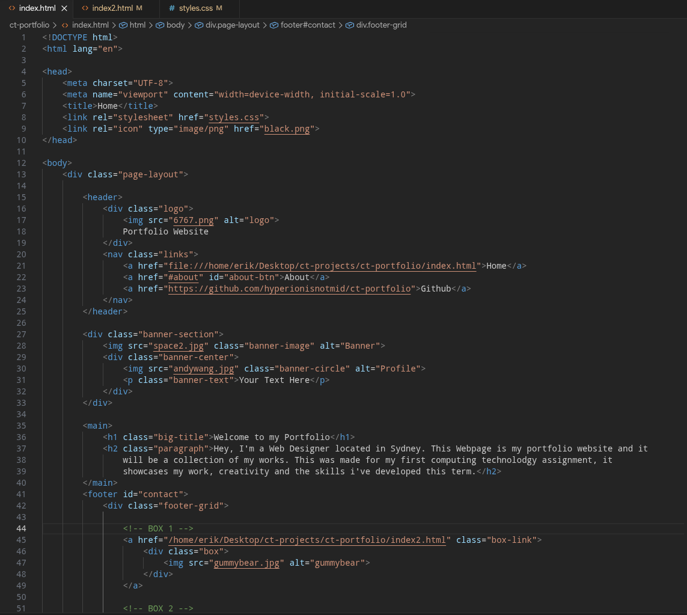

MARCUS
MARCUS
What Does it Include?
My first project was designed to show off my skills in web development. It includes a consistent header and footer, HTML/CSS structure, project cards, hover effects.
CSS Code Image

HTML Code Image

Reflection
This is my first ever project relating to Web Development, and I am very happy with how I have done on it. This term has taught me a lot in the basics of HTML and CSS. To create this website, I had to apply my knowledge from classwork and from research I did at home to create this. As I continued working on the project, I realised how much freedom web development actually gives you. Every time I changed an idea or redesigned a section, I learned something new about how css and html work. I learnt that understanding how different elements interact, how layout affects usability, and how small details like spacing, colours, and animations can completely change the feel of a page. This process of experimenting, breaking things, fixing them, and improving the design helped me build my skill set and my confindence in Web Deelopment. When designing my portfolio, I had many different initial ideas and kept changing what my website was. This allowed me to explore a variety of css techniques and let me make my website even better. Some things that I learnt include knowing how to add a spinning chicken to my website, how to make a parallax and hover effects, all of which help to improve my websites design and aesthetic. There were some things that I found challenging, including how to add buttons to my header and why my background kept dissapearing (After a whole day I found out it was because of a dark mode web extention ). In the future I will try to add more advanced features such as java script to enhance the responsiveness and interactivity of my website, I would also like to try adding more animations. In conclusion, this website has taught me a lot about HTML and CSS, and it showed me how simple it really was. I remember when I first started I was completely unsure on how to being, thinking that this project would be a nightmare of work, but it was really the opposite, I had an amazing time working on this and I can't wait for what comes next.